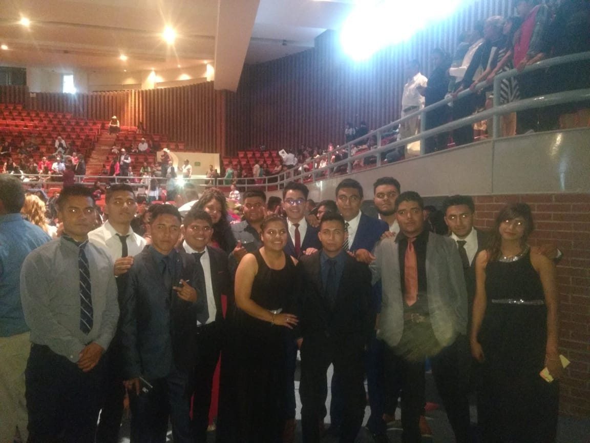

Para poder estudiar la universidad me vi en la necesidad de entrar a una universidad fuera de el estado en donde vivo debido a que las universidades locales no contaban con la carrera que me interesaba, la opción más cercana y económica fue la universidad UTNG en la ciudad de Dolores Hidalgo entrando a la carrera primero como TSU en Redes y Telecomunicaciones en el cuatrimestre de estadías me otorgaron un lugar en una empresa de la ciudad de Querétaro, cabe mencionar que era una empresa muy buena y reconocida por lo que obtuve mucho aprendizaje y experiencia, al terminar mi TSU presente examen para ingresar a esta misma universidad pero ahora en el área de TICS a nivel ingeniería, hasta el momento me encuentro cursando el noveno cuatrimestre de ingeniería.
 Inicio